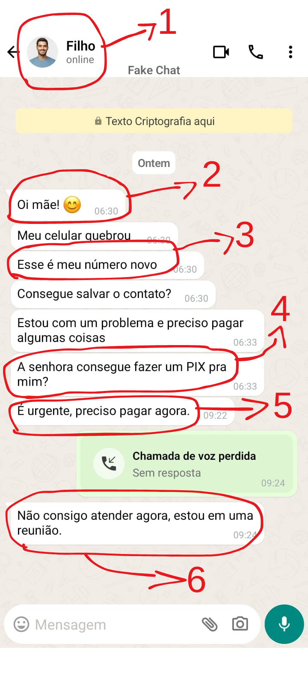

O que é um golpe via WhatsApp?
- Um tipo de golpe onde o criminoso utiliza o aplicativo WhatsApp para cometer golpes.
- O golpista pode se passar por amigos, familiares, empresas ou organizações governamentais.
- Os golpistas têm como objetivo obter informações pessoais, acesso a contas ou transferir dinheiro indevidamente.
- O exemplo abaixo ilustra um golpista fingindo ser um filho.
Como identificar um golpe via WhatsApp? (Siga os números da imagem)
*A mensagem abaixo é uma conversa fictícia criada para fins educativos.*

Siga os números da imagem acima:
- Foto de perfil copiada - O golpista pode ter pego a foto de perfil de uma rede social ou outra conta. Por isso não se deve confiar apenas nas imagens como comprovante de identidade.
- Mensagem inesperada - Desconfie sempre que um familiar entrar em contato sem aviso prévio.
- Número novo - Tática usada pelo golpista para justificar o uso de um número diferente desconhecido.
- Pedindo dinheiro - Nunca envie dinheiro sem confirmar a identidade do remetente.
- Urgência - O golpista usa frases como "é urgente", "preciso agora" e "não dá tempo de explicar" com intuito de pressionar as vítimas.
- Evitar ligações - Se a pessoa tentar criar desculpas para não atender ligações ou chamadas, desconfie.
Como evitar um golpe via WhatsApp?
- Desconfie de pedidos de pessoas que se apresentem como amigos, familiares ou empresas.
- Não clique em links suspeitos ou baixe anexos de fontes desconhecidas.
- Verifique a identidade da pessoa antes de compartilhar informações pessoais.
- Nunca compartilhe informações pessoais ou senhas via WhatsApp para qualquer um.
- Ative a verificação em duas etapas do WhatsApp.
O que fazer em caso de golpe via WhatsApp?
Se você identificou um golpe:
- Bloqueie e denuncie o contato suspeito.
- Não responda a mensagem.
- Ligue para a pessoa pelo número que já conhece.
- Avise a pessoa que o golpista tentou se passar por ela.
- Envie um e-mail para support@whatsapp.com relatando a fraude e informando o número do golpista.
Se você caiu em um golpe:
- Entre em contato com a polícia ou o órgão de proteção ao consumidor.
- Entre em contato com o banco imediatamente.
- Registre um boletim de ocorrência.
- Altere as senhas de suas contas online.
- Denuncie o número.
- Avise os seus amigos e familiares.
- Se possível, tire e guarde uma foto da tela como prova da conversa.
Se você concluiu a leitura deste conteúdo, clique no botão abaixo para responder às perguntas e verificar o que aprendeu.
Clique aqui para responder as perguntas